Filters and Options
By default, reports display all available data. Filters enable you to fine-tune the information a report displays by selecting the specific data that you want to view. For example, you might filter the Volumes by Carrier report so that it only takes into account consignments shipped in the last month, rather than taking all consignments into account.
Filters
You can filter reports either at a report-wide or visualisation-specific level.
- Report-wide filters can be selected from the panel on the left-hand side. Filters selected from this panel affect all visualisations on the report.
- Visualisation filters can be applied by clicking a filter and selecting options from the Filters panel on the right-hand side. Filters selected in this way only apply to the selected visualisation.
Note:
The list of filters available differs between reports. For information on a report's specific filters, see that report's documentation page in the Reports section.
You can combine multiple filters if you need to. For example, say you want to see a graph charting how many shipments you sent with DPD and UPS between 30/07/2019 and 30/08/2019. view this information this you could:
Open the Volumes by Carrier report.
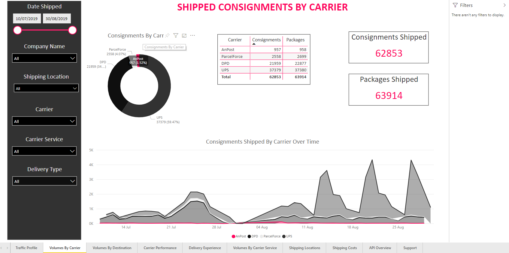Use the Date Shipped selector on the left-hand panel to select only consignments shipped between 30/07/2019 and 30/08/2019. The report filters all visualisations so that only consignments shipped between those dates are taken into account.
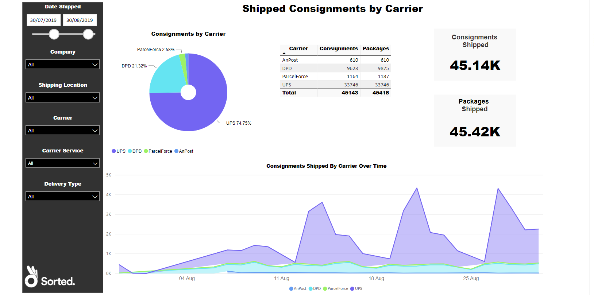Select the Consignments Shipped by Carrier Over Time chart and click the Carrier drop-down on the right-hand Filters panel. A list of available carriers is displayed.
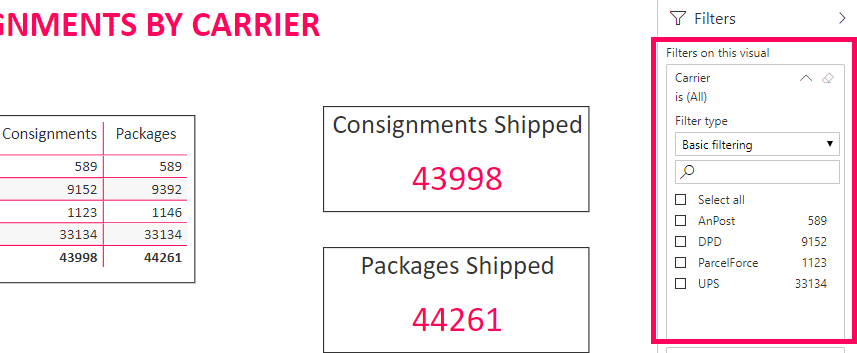Select the carriers that you want to filter the visualisation by (in this case, UPS and DPD). The report filters the chart so that it only takes into account consignments that were shipped by either UPS or DPD AND meet the existing report filter criteria (that is they were shipped between 30/07/2019 and 30/08/2019).
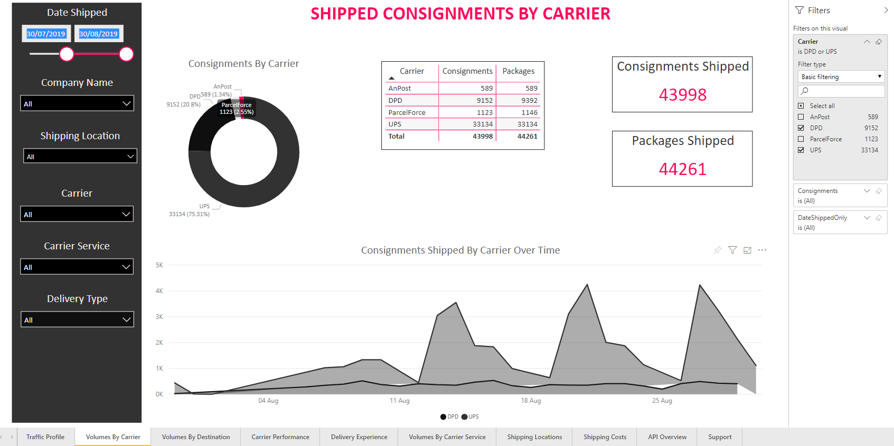
Note that while the report-wide date filter affects all of the report's visualisations, the visualisation-specific carrier filter only applies to the Consignments Shipped by Carrier Over Time chart.
To reset a report's filters back to default, click the Reset to Default button on Power BI's top toolbar.
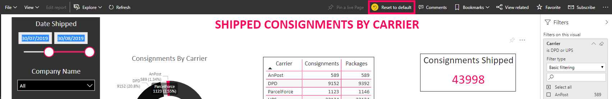Filtering Visualisations
Each visualisation has various filterable properties. The PRO reports use four types of filter, depending on whether the property in question is a numerical field, text field, or date field:
- Numerical - Used on numerical fields, enables you to specify a required number range.
- Basic - Used on text fields, enables you to select simple values (such as individual carrier names) from a list.
- Advanced - Used on text fields, enables you to select values based on custom selection criteria (such as selecting all carrier services that have names beginning with "UPS").
- Relative Date - Used on date fields, enables you to specify a required date range.
Using Numerical Filters
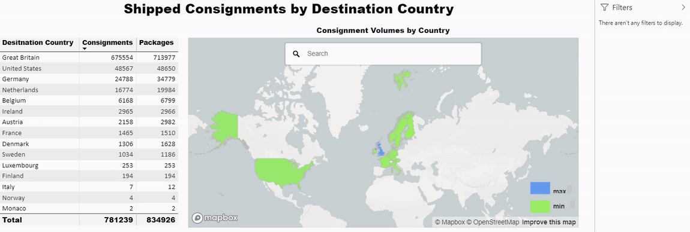Numerical filters enable you to specify a number range to a numerical field. Once applied, the visualisation is filtered so that it only takes into account records in which the value of the filtered field meets the criteria you specified.
For example, suppose that you are viewing the data table on the Shipped Consignments by Destination Country report, but you are only interested in countries to which you have shipped more than 1000 consignments. You could apply a numerical filter to the Consignments field so that the table only shows country records where the value of Consignments (that is, the total number of consignments shipped to that particular country) was above 1000.
To apply a numerical filter to a visualisation:
Ensure that the Filters panel is displayed and select the visualisation. A list of available filters is displayed
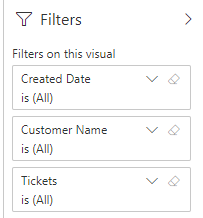Click the drop-down menu for the numerical field you want to filter. Editable filter options are displayed.

Select an operator and enter a value. The following operators are available:
- Is Less Than
- Is Less Than or Equal To
- Is Greater Than
- Is Greater Than or Equal To
- Is
- Is Not
- Is Blank
- Is Not Blank

If required, select either And or Or radio button and repeat step 3 to add a secondary filter. If you do not want to add a secondary filter, leave the value box blank.
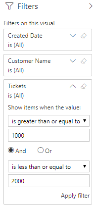Click Apply Filter to save your changes.
Using the example given earlier, if you wanted to filter the Shipped Consignments by Destination Country report's Consignments field so that only countries to which you have shipped 1000 or more consignments were displayed, you would select Is Greater Than or Equal To from the operator drop-down and enter 1000 into the value box.
If you wanted to modify that filter so that only countries to which you have shipped between 1000 and 2000 consignments were displayed, you would select the And radio button and enter Is Less Than or Equal To / 2000 from the secondary filter.
Using Basic Filters
Basic filters enable you to select discrete text values. Once applied, the visualisation is filtered so that it only takes into account records in which the value of the filtered field meets the criteria you specified.
For example, suppose that you are viewing the Delivery Type by Carrier visualisation on the Delivery Experience report, but you only want to view the delivery types used in shipments by DPD and UPS, rather than your entire suite of carriers. You could use basic filtering to select those two carriers specifically.
To apply basic filtering to a visualisation:
Ensure that the Filters panel is displayed and select the visualisation. A list of available filters is displayed.

Click the drop-down menu for the text field you want to filter.
Ensure that Basic Filtering is selected from the Filter Type drop-down menu. A list of selectable values is displayed.
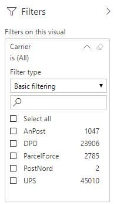Use the check boxes to select the values that you want to filter by. Power BI filters the visualisation automatically.

Using Advanced Filters
Advanced filters enable you to select all text values that meet certain criteria, rather than selecting individual values themselves.
For example, suppose that you are viewing the % of Total Consignments by Carrier Service visualisation on the Shipping Consignments by Carrier Service report. However, rather than viewing data for all of your carrier services, you only want to view your UPS carrier services. In this case you could use an Advanced filter on the Carrier Service field to filter out all carrier services other than those whose names start with "UPS".
To apply advanced filtering to a visualisation:
Ensure that the Filters panel is displayed and select the visualisation. A list of available filters is displayed.
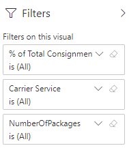Click the drop-down menu for the field you want to filter and select Advanced filtering from the Filter Type drop-down menu. The panel displays filter controls.

Select an operator from the Show items when the value: drop-down menu. The following operators are available:
- Contains
- Does Not Contain
- Starts With
- Does Not Start With
- Is
- Is Not
- Is Blank
- Is Not Blank

Enter a value into the text box. Returning to the previous example, you would need to select Starts with from the drop-down menu and then enter UPS into the text box in order to filter out all carrier services other than those whose names start with "UPS"

If required, select either And or Or radio button and repeat steps 4 and 5 to enter additional criteria.
Click Apply Filter to save your changes.
Using Relative Date Filters
Relative date filtering is only available on date fields. It enables you to filter visualisations by providing a date range that is relative to the current date and time.
For example, suppose that you are viewing the Consignments Shipped By Carrier Over Time visualisation of the Shipped Consignments by Carrier report, but you only want to view data for the late two weeks. You could use a relative date filter on the DateShippedOnly field to select only those consignments that were shipped in the last two weeks.
To apply a relative date filter:
Ensure that the Filters panel is displayed and select the visualisation. A list of available filters is displayed.

Click the drop-down menu for the field you want to filter and select Relative date filtering from the Filter Type drop-down menu. The panel displays date controls.
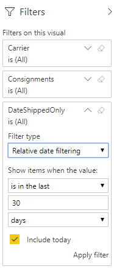Enter your filter criteria:
- Select an operator from the Show items when the value: drop-down menu. The available options are Is In The Last, Is In This, and Is In The Next.
- Enter a value into the text box.
- Select a unit from the bottom drop-down box. The available options are Days, Weeks, Calendar Weeks, Months, Calendar Months, Years, and Calendar Years.
- If required, select the Include Today check box to include the current date in your calculations.
Click Apply Filter to save your changes.
Using the example given earlier, if you wanted to filter the Consignments Shipped By Carrier Over Time visualisation of the Shipped Consignments by Carrier report to only display consignments shipped in the last two weeks, you would select Is In The Last, 14, and Days when filtering the DateShippedOnly field.
Visualisation Options
Each visualisation has a More Options drop-down menu, enabling you to perform additional actions relating to its data. To access the More Options menu, select a visualisation and click the More Options button in the top-right of the panel.

The following options are available:
Open Comments
Opens Power BI''s Comments panel, from where you and your team can leave comments on individual visualisations.
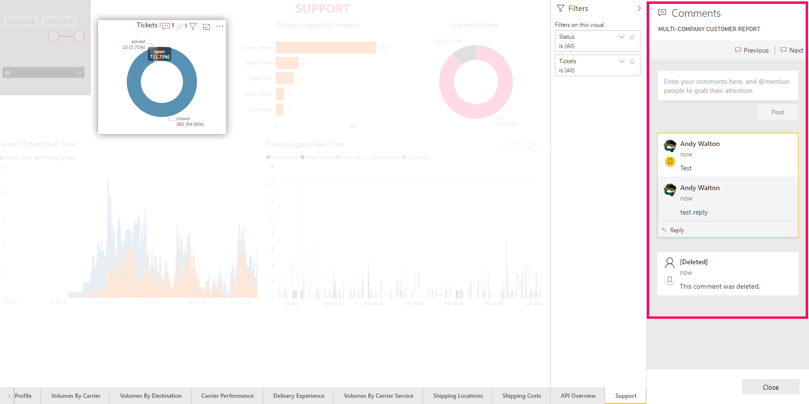More information:
For more information on using Power BI's Comments panel, see the Power BI docs.
Export Data
Enables you to save a visualisation's underlying data as a .CSV or .XLSX file.

More information:
For more information on exporting data from Power BI, see the Power BI docs.
Show Data
Displays the dataset that was used to generate that particular visual.
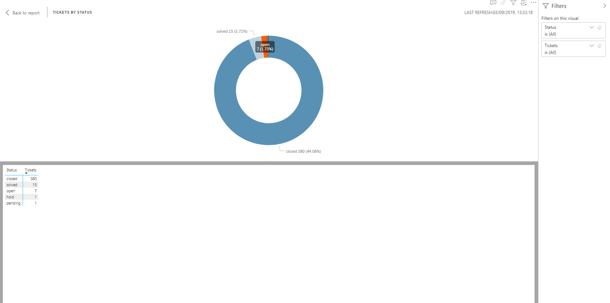Spotlight
Highlights the selected visualisation on the page.
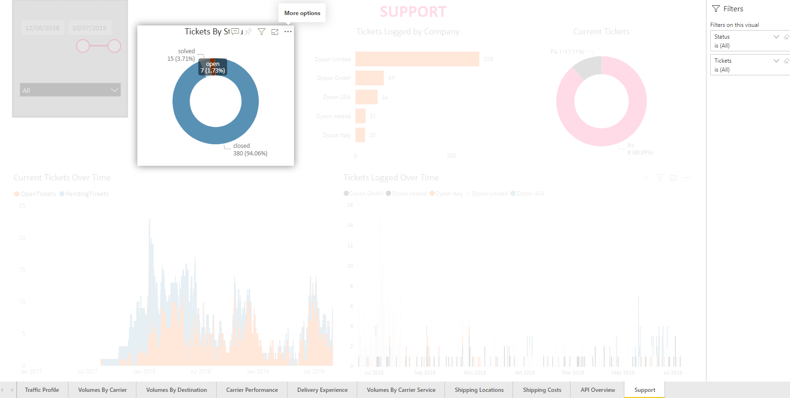Sort (Descending / Ascending / Sort By)
Enables you to specify how the visualisation's data should be sorted.

Note:
Not all options are available to all visualisations. For information on a visualisation's specific options, see that report's documentation page in the Reports section.
Next Steps
For further details on the reports themselves, see the Reports section.